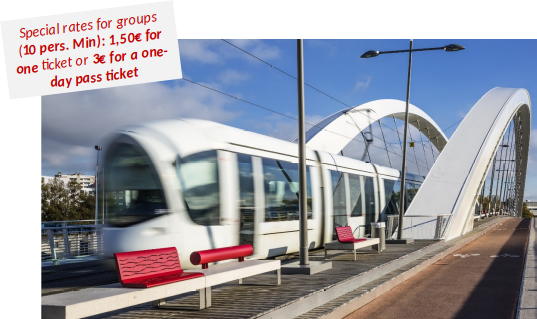

Local Informations
Accessibility – Transportation and visa
By plane – Lyon Airport – the Heart of Europe
- 99 international destinations connected to 59 European cities
- 49 airline companies
- over 130 non-stop flight routes
By Train – 3 high speed train stations
- St Exupéry train station (airport) connected to Lyon Airport.
- Perrache train station (city center) serves mostly for trains operating on the Paris to Marseille route.
- Part Dieu train station (city center)
Visa
- European and Schengen area citizen: Current valid identity card or passport needed
- Outside Schengen area citizen:
- A passport is mandatory, with a visa for some countries.
- The short-stay visa is called “visa C” and it stands for less than 90 days. Price: 80 € application.
In the City
The T.C.L. (Lyon Public Transportation) :
- extensive network of buses, metro and tramway
- 4 metro lines: A B C D
- 7 tramway lines: T1, T2, T3, T4, T5, T6 and T7 lines
- 2 funicular lines
- 140 bus lines, including electric trolleybuses
- the second largest public transport system in France
- covers 62 communes
- spreads over 606 square kilometers (234 sq mi).
